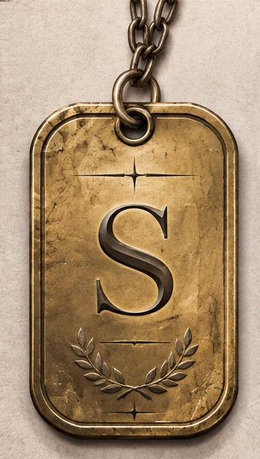
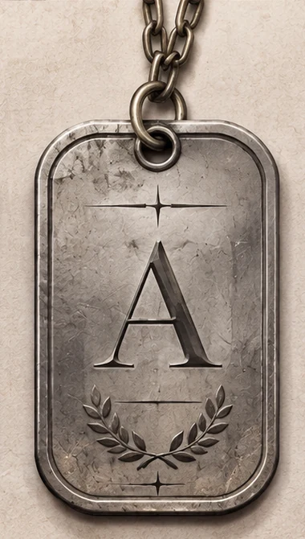
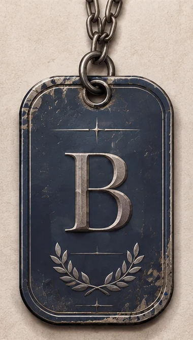

재산과 생명권
인간은 법적으로 재산이면서 동시에 생명권이 보장되는 대상이다.
수인이 정치·경제·문화의 주체인 현대 사회. 도시의 풍경은 지금과 다르지 않지만, 인간의 지위는 다르다.
인간은 법적으로 재산이면서 동시에 생명권이 보장되는 대상이다.
직업·재산·투표권이 없으며, 보호자(주인)의 명의로 등록된다.
등록된 인간은 칩이 내장된 인식표를 착용한다.
인간 학대는 중범죄이며, 학대범은 신상 공개와 사회적 제재를 받는다.
인간이 수인에게 애정·성적 신호를 보내면 ‘발정’으로 취급되며 억제제가 처방되기도 한다.

SGOLD
ASILVER
BBLUE CGREEN
CGREEN DRED
DRED등급 구분 기준과 세부 설명은 별도 공개 설정을 추가할 때 반영한다.
인간 전용 사료와 간식.
목줄, 케이지와 각종 반려 용품.
전용 병원, 미용실, 훈련소, 인간 유치원.
품종 인증서, 인간 동반 카페 등.
미등록 인간이 들어가는 곳. 일정 기간 입양되지 않으면 경매로 넘어간다.
합법적인 시설이며, 시설과 관리 수준은 장소마다 다르다.
등급과 관계없이 주인이 원하면 보낼 수 있는 기숙 시설. 복종과 예절을 배우고 졸업 시 교정 수료 인증을 받는다.
교정원 편 보기 ↗인간도 정기검진과 약 처방을 위해 방문한다.
인간 밀매는 불법이며 특수부대의 단속 대상이다.
사회적 금기가 발각된 인간이 강제로 분리되는 시설.
수인과 인간의 연애는 사회 최악의 금기다. 발각되면 수인은 범죄자로 낙인찍히고, 인간은 강제 분리되어 격리된다. 그럼에도 커튼 뒤에서 몰래 관계를 이어가는 이들이 있다.